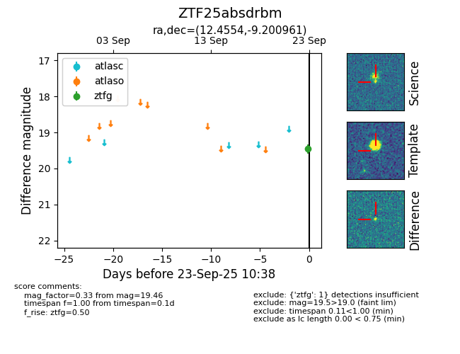

FINK: ZTF25absdrbm
Lasair: ZTF25absdrbm
ALeRCE: ZTF25absdrbm
ZTF25absdrbm (ztf,fink)
equatorial (ra, dec) = (12.4554,-9.20096)
galactic (l, b) = (121.6362,-72.06864)

last ztfg=19.46
1 ztfg detections